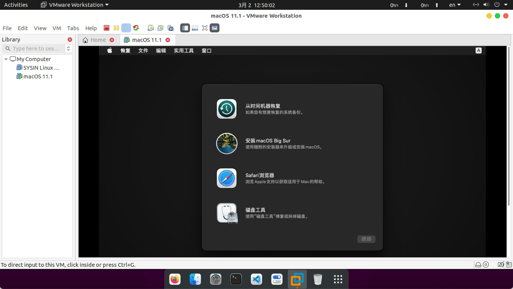

VMware Workstation 16.1 版本已提供
2020.12.29，增加 16.1 Windows 版 SLIC 和 macOS Unlocker 补丁
2021.03.02，更新 16.1 Windows 版补丁，集成 darwin vm tools
2021.03.02，新增 16.1 Linux 版 SLIC 和 macOS Unlocker 补丁，并集成了 darwin vm tools
请访问原文链接：VMware Workstation 16 Pro (Linux、Windows) SLIC & Unlocker，查看最新版。原创作品，转载请保留出处。
作者：gc(at)sysin.org，主页：www.sysin.org
2020年9月15日，VMware Desktop Hypervisor team 宣布正式发布 VMware Workstation 16 Pro and Player!

更新说明
16.1
- 支持新的主机/客户机操作系统：
- Windows 10 20H2
- Ubuntu 20.10
- Fedora 33
- RHEL 8.3
- 更新了
vctl kind以支持 KIND v0.9.0 - 包含
docker-machine-driver-vmware
16.0
容器和 Kubernetes 支持
使用 vctl CLI 构建/运行/提取/推送容器映像。
支持在 Workstation Pro 上运行的 KIND Kubernetes 集群。
注意：需要 Windows 10 1809 或更高版本
支持新的客户机操作系统
- RHEL 8.2
- Debian 10.5
- Fedora 32
- CentOS 8.2
- SLE 15 SP2 正式发布版
- FreeBSD 11.4
- ESXi 7.0
客户机中支持 DirectX 11 和 OpenGL 4.1
- 硬件要求：
- 对于 Windows 主机，需要使用支持 DirectX 11.0 的 GPU。
- 对于 Linux 主机，需要使用 NVIDIA GPU。
- 软件要求：
- 主机操作系统（64 位）：
- Windows 8 或更高版本
- 具有支持 OpenGL 4.5 及更高版本的 NVIDIA 驱动程序的 GNU/Linux
- 客户机操作系统
- Windows 7 或更高版本
- 具有 vmwgfx 的 GNU/Linux
- 主机操作系统（64 位）：
- 硬件要求：
Linux Workstation 支持 Vulkan 渲染
Workstation 16 Pro 对 Linux 主机上的 Intel GPU 启用了 3D 支持，从而能够使用 Vulkan 渲染器向虚拟机提供 DirectX 10.1 和 OpenGL 3.3。
注意：需要使用具有最新 Intel/Vulkan 驱动程序的 Linux 主机操作系统，建议使用 Mesa 20.1 或更高版本。
沙箱式图形
通过从 vmx 中移除图形渲染并将其作为单独的沙箱流程运行，增强了虚拟机的安全性。
支持 USB 3.1 控制器
虚拟机的虚拟 XHCI 控制器已从 USB 3.0 更改为 USB 3.1 以支持 10 Gbps。
更大的虚拟机
- 32 个虚拟 CPU
- 128 GB 虚拟内存
注意：运行具有 32 个 vCPU 的虚拟机要求您的主机和客户机操作系统都要支持 32 个逻辑处理器。 - 8 GB 虚拟图形内存
深色模式
Workstation 16 Pro 支持深色模式，可提供优化的用户体验。
注意：主机操作系统需要为 Windows 10 1809 或更高版本
支持 vSphere 7.0
在 Workstation 16 中，您可以执行以下操作：
- 连接到 vSphere 7.0。
- 将本地虚拟机上载到 vSphere 7.0。
- 将在 vSphere 7.0 上运行的远程虚拟机下载到本地桌面。
提高了性能
- 提高了文件传输速度（拖放、复制和粘贴）
- 缩短了虚拟机关机时间。
- 提高了虚拟 NVMe 存储性能。
改进了辅助功能支持
改进了辅助功能支持，使得 Workstation Pro 符合 WCAG 2.1 标准。
补丁特性概览
VMware_DELL_2.5_BIOS-EFI_Mod
SLP 2.5 (BIOS.440 & EFIs - Dell 2.5 SLIC) - NT 6.0 (Vista/Server 2008), NT 6.1 (7/Server 2008 R2), NT 6.2 (Server 2012), NT 6.3 (Server 2012 R2), NT 10.0 (Server 2016/Server 2019)
直接 OEM SLP 运行 Windows Server 2019 （附：集成 Windows Server 2019 OVF 下载）
解锁 macOS，支持 macOS Big Sur
直接新建虚机，操作系统选择“Apple macOS 11”，即可安装和正常启动。
附：用于 VMware 的 macOS Big Sur 可启动 iso 下载。
其他 OVF：CentOS 8.0 x86_64 OVF，Ubuntu 20.04 LTS (Focal Fossa) OVF，更多请在本站搜索“OVF”。
下载地址
VMware Workstation 16.1 Pro for Linux
官方原版：
VMware-Workstation-Full-16.1.0-17198959.bundle
百度网盘链接链接: https://pan.baidu.com/s/1BHzOnSG9TlvG5fzuzgpHJw 密码: kbq3Patch：SLIC 2.5 集成，解锁 macOS
vm-ws-16-patch.bin
百度网盘链接链接: https://pan.baidu.com/s/1M4oo2HcD1Gqyl9w9B3VeOQ 密码: uolg安装方法：
chmod +x vm-ws-16-patch.bin && sudo ./vm-ws-16-patch.bin
VMware Workstation 16.1 Pro for Windows
官方原版：
VMware-workstation-full-16.1.0-17198959.exe
百度网盘链接链接: https://pan.baidu.com/s/1Hpcs3ckJP2dymOOPMRn2rw 密码: f64sPatch：SLIC 2.5 集成，解锁 macOS
VM_Patch_16.1_full_tools.exe
百度网盘链接链接: https://pan.baidu.com/s/1SMPxndcRQbmrdzB2Ya3FjA 密码: t2hk
Workstation 16 Pro （补丁未提供）
链接: https://pan.baidu.com/s/160n2Xbp00J8NxsrSdypH4w 密码: osrp
Windows：VMware-workstation-full-16.0.0-16894299.exe
Linux：VMware-Workstation-Full-16.0.0-16894299.x86_64.bundle
Windows：VMware-player-16.0.0-16894299.exe
Linux：VMware-Player-16.0.0-16894299.x86_64.bundle
促销信息：
>>全球网盘极速中转，1G流量不到1元，支持 Rapidgator、Rg.to、Uploaded...
>>阿里云：新用户2核2g仅需86元/年，2核4g企业仅需469.39元/年
>>腾讯云：云产品限时秒杀，爆款1核2G云服务器，首年99元
>>华为云：精选云产品2折起，注册立领8800元上云礼包
如果文章中使用的内容和图片侵犯了您的版权，请联系作者删除。如果您喜欢这篇文章或者觉得它对您有用，欢迎您发表评论，也欢迎您分享这个网站，或者赞赏一下作者，谢谢！
 支付宝打赏
支付宝打赏
 微信打赏
微信打赏
赞赏一下